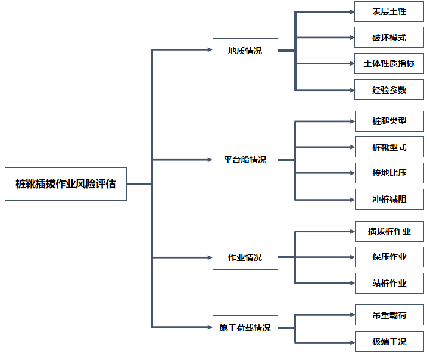

问题名称：桩靴插拔作业风险评估
问题层数：
| 层 | 编号 | 项目名称 | 上层编号 |
|---|---|---|---|
| 1 | 1001 | 地质情况 | 0 |
| 1 | 1002 | 平台船情况 | 0 |
| 1 | 1003 | 作业情况 | 0 |
| 1 | 1004 | 施工荷载情况 | 0 |
| 2 | 2001 | 表层土性 | 1001 |
| 2 | 2002 | 破坏模式 | 1001 |
| 2 | 2003 | 土体性质指标 | 1001 |
| 2 | 2004 | 经验参数 | 1001 |
| 2 | 2005 | 桩腿类型 | 1002 |
| 2 | 2006 | 桩靴型式 | 1002 |
| 2 | 2007 | 接地比压 | 1002 |
| 2 | 2008 | 冲桩减阻 | 1002 |
| 2 | 2009 | 插拔桩作业 | 1003 |
| 2 | 2010 | 保压作业 | 1003 |
| 2 | 2011 | 站桩作业 | 1003 |
| 2 | 2012 | 吊重载荷 | 1004 |
| 2 | 2013 | 极端工况 | 1004 |

项目编号：中间层的每个项目应设定唯一编号，用于设定上下层关系
上级编号：当前项目的上一级项目的编号，第一层项目的上级编号=0